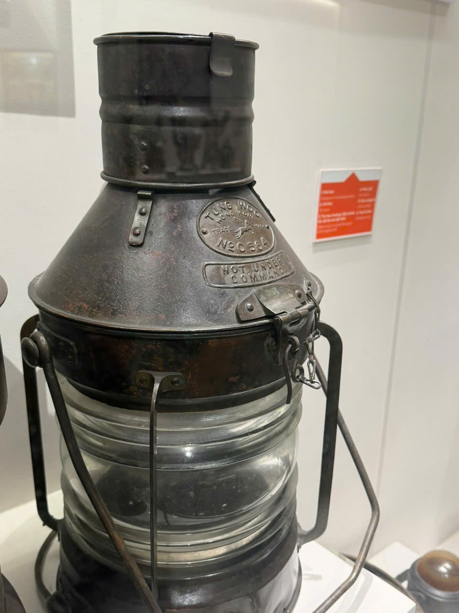

A04 · Ảnh cùng nhóm, giữ riêng để test
Đèn có chữ C564
Gợi ý đúng; cần khách xác nhậnKỳ vọng: Đèn có chữ C564


Similarity: 0.9290 · Margin: 0.0102 · Tự nhận: Không
| Hồ sơ | Gợi ý Top 3 | Độ tương đồng |
|---|---|---|
| PHOTO-003 | Đèn có chữ C564 | 0.9290 |
| PHOTO-005 | Đèn có chữ PORT | 0.9188 |
| PHOTO-006 | Đèn cầm tay có quai lớn và khung bảo vệ | 0.8492 |